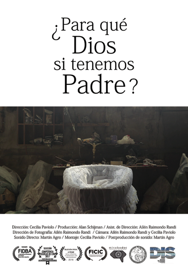
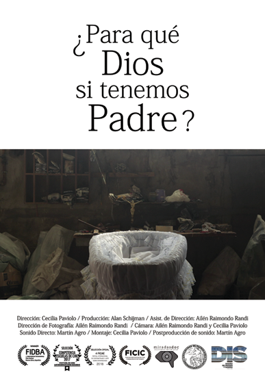

Somos Cecilia y Ailén, diseñadoras de Imagen y Sonido de la Universidad de
Buenos Aires y postgraduadas de Convergencia
Multimedial en la misma
casa de estudios. Nos dedicamos a la realización integral de producciones
audiovisuales, tanto
de ficción como documentales. Nuestros trabajos
cuentan con diversos reconocimientos nacionales e internacionales.
Cecilia Paviolo

Nació en Buenos Aires en 1994.
Estudió en la Escuela Superior de
Comercio Carlos Pellegrini - UBA.
Actualmente trabaja como fotógrafa,
guionista, directora y productora,
mientras continúa sus estudios en la
carrera de Filosofía en la Facultad de
Filosofía y Letras - UBA.
Ailén Raimondo Randi

Nació en Buenos Aires en 1994.
Estudió en la Escuela Superior de
Comercio Carlos Pellegrini - UBA.
Actualmente trabaja como fotógrafa,
guionista, directora y productora,
mientras continúa sus estudios en la
carrera de Filosofía en la Facultad de
Filosofía y Letras - UBA.

 
